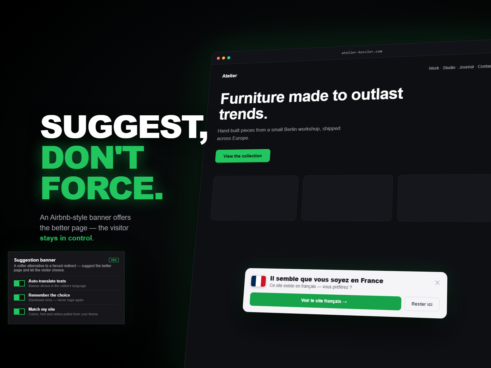

Framer guide
How to send Framer visitors to the right language version
You built French, German, and Spanish versions of your Framer site. But everyone still lands on the English one. Framer translates pages; it doesn't route visitors to them. Here's how to close that gap by browser language, without wrecking your SEO.
Country or language: which signal?
They answer different questions. Language is the right signal for choosing a language version: a French speaker in Canada wants French, and a German expat in Spain wants German, regardless of where their IP sits. Country is the right signal for pricing, currency, and legal or regional stores. The browser sends an Accept-Language preference on every request, which is exactly what you want for language routing, and you can combine it with country when you need both.
Why not the JavaScript version
The copy-paste approach reads navigator.language and redirects with JavaScript. It flashes the wrong page first, and forced client-side redirects are what Google's internationalization guidance warns against. Googlebot crawls mostly from US, English-preferring requests; if it always gets bounced, your other language versions may not get crawled well.
The SEO-safe setup with Router
Framer has no language-routing setting, so this comes from a plugin. Router reads the visitor's language server-side and acts on it:
- Install Router from the Framer marketplace.
- Add language rules:
fr → /fr,de → /de,es → /es. Combine with country if needed (for example German speakers outside DACH to a specific page). - Choose suggest or redirect. A dismissible banner offers the matching page and auto-translates itself into the visitor's language, so it's readable even before they switch. The visitor stays in control, and the choice is remembered so they're never asked twice.
- Publish. Detection runs server-side, so there's no flash of the wrong page and no API keys in your source.

hreflang tags so search engines index the right version per language, then use Router to guide humans to it.Match every visitor to their language
Router for Framer routes by language, country, and device, with SEO-safe suggestion banners. Free plan available.
Install Router for Framer See features & pricingFAQ
Does this work with Framer Localization?
Yes. Router just sends or suggests whichever locale URL you specify, including Framer's own localized paths.
Can I combine language and country?
Yes. Rules can match language, country, region, device, or VPN status, alone or combined, and the first matching rule wins.
What if the visitor's language isn't one I support?
They fall through to your default page. Only visitors whose language matches a rule are routed or shown a banner.